강렬한 색상으로 자극적이면서 사람을 흥분하게 만드는 역할을 하고, 식욕을 느끼게 한다. 맛있거나 달콤함을 연상시켜 음식의 맛을 돋우는 작용을 하므로 다이어트에서는 피해야 할 색이다.
1. 색의 성격오랜 시간 만들어진 색상이 가지고 있는 성격 : 외향, 정열, 적극적, 단순, 냉정하지못함, 감상적 2. 색의 영향사람이 인지했을 때 느낌 : 생명력, 따듯함, 위험. 불안, 혁명, 흥분, 정열, 용기, 모험심, 주목성이 강함 3. 색의 처방색상을 의도적으로 활용할 수 있는 방법 : 빈혈이나 무화력에 사용, 강한 자극제, 지구력 회복, 감수성 자극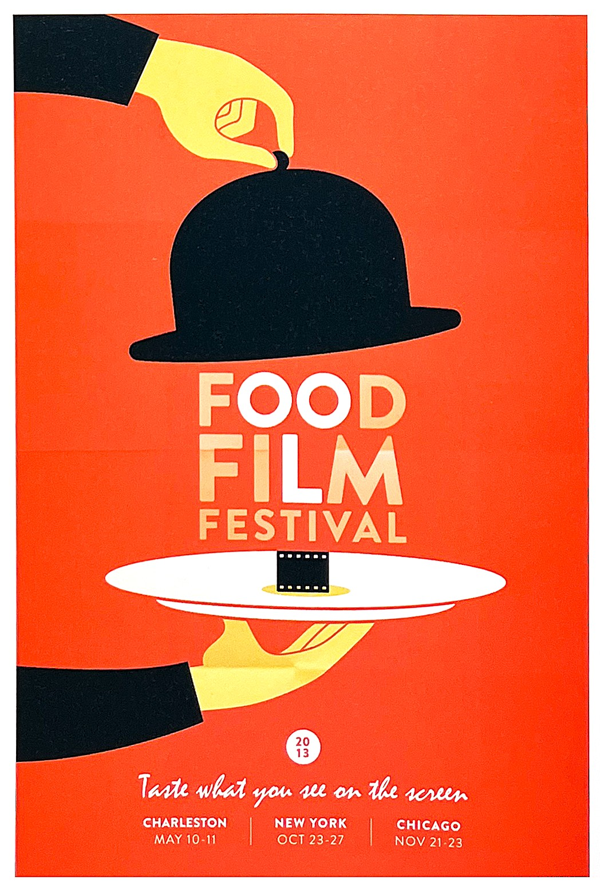
* Food Film Festival-Grephine : 식용을 불러 일으키는 대표적인 색상인 빨간색을 사용했으며 필름을 상징하는 아이콘으로 Food Film Festival을 절묘하게 표현했습니다.
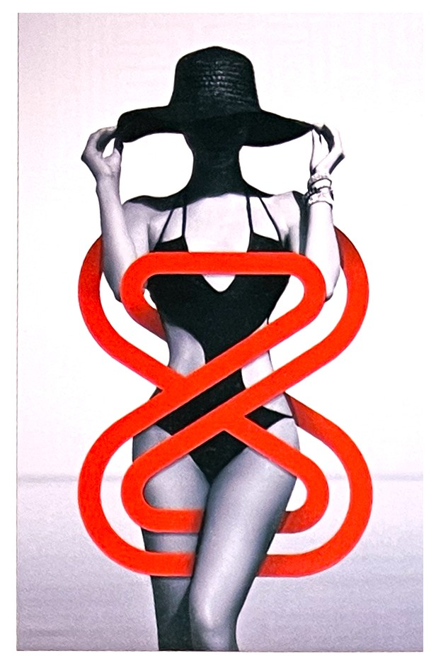* Superfried : 빨간색의 강렬함은 검은색이나 무채색 이미지와 사용하면 주목성과 고급스러움을 동시에 치할 수 있다.
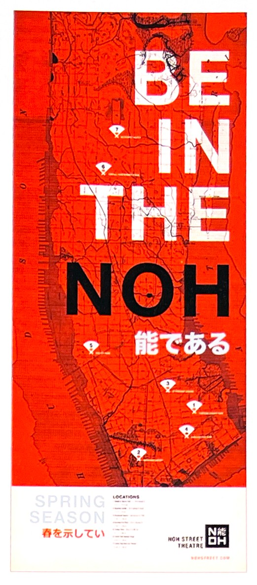** Be in the Noh : 빨간색과 무채색을 사용해 주목성이 높은 디자인이다.
빨간색 상징[4]긍정적 감정과 상징: 사랑, 열정, 발렌타인데이, 아름다움, 리더쉽, 사내다움, 크리스마스, 용기, 희생 부정적 감정과 상징: 공격성, 부정적, 부상, 위험, 금지, 피, 죄, 화남, 경고 연상되는 자연/자연물: 열, 불, 화산 정치.종교적 상징: 보수주의, 사회주의, 공산주의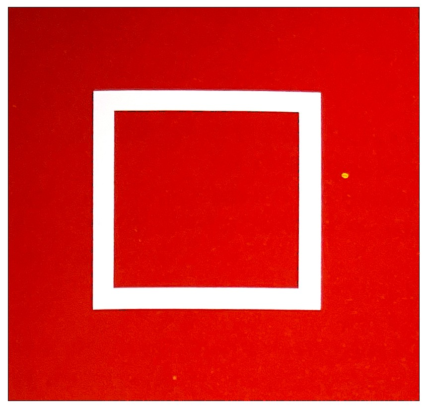
빨강의 심볼정사각형[6]
빨간색(Red)"빨강은 다른 것과 비교하기 힘든 확실한 정체성이 있으며, 꾸밈도 없다" 헤겔Hegel
감청색과 연파랑, 파랑과 녹색, 심지어 파랑과 빨강을 구분하지 못했던 시절을 상상하기는 어려운 일이다. 하지만 아직 문자 언어가 발생하기 이전인 고대에서부터 언어를 추적하다 보면 실제로 이와같은 무색의 세계와 맞딱드리게 된다.
적어도 언어적인 측면에서 말이다. 검정과 흰색외에도 수많은 문화에서 반드시 구별해야 한다고 느꼈던 색깔이 있다면, 전 대륙의 전 문화에 걸쳐 동일하게 최초로 이름 지어진 색갈이 있다면,
바로 빨간색이다.
피의 색, 그리고 원시적인 자연의 색, 샘 족 히브리인부터 뉴기니 섬의 다양한 종족에 이르기 까지 이 색의 이름이 피를 상징하는 언어에서 비롯되었다는 사실은 그다지 놀라운 일이 아니다.[1]
로마 신화에서 빨강은 전쟁의 신 마르스Mars와 연관되며, 승리한 로마 장군은 그의 공적에 대한 영광을 나타내기 위해 빨강색을 칠했다고 한다.[4]
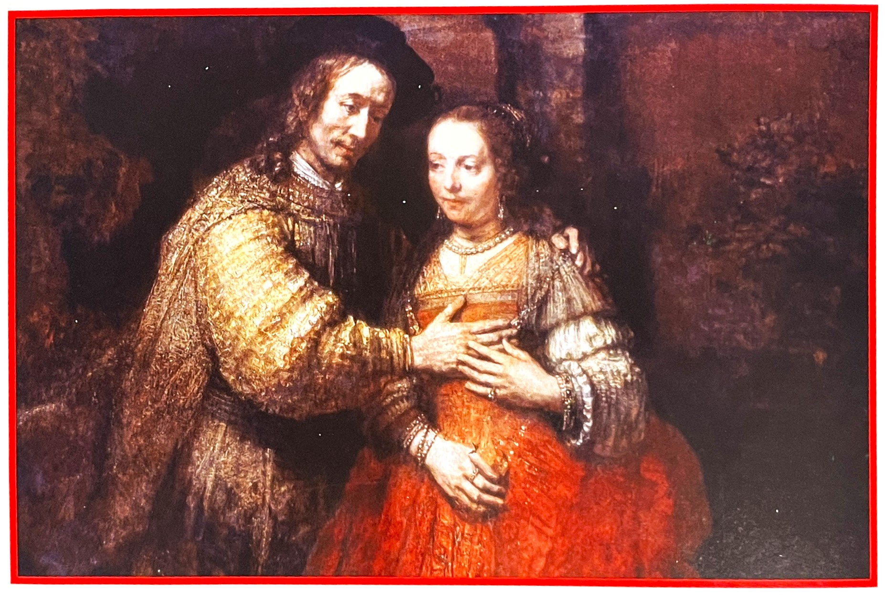렘브란트Rembrant는 [유대인 신부부Jewish Bride라는 작품에서 코치닐을 사용하여 아름다운 빨간색 드레스를 표현해냈다. 아마 드레스 자체를 코치닐로 염색했을 것이다.[1]
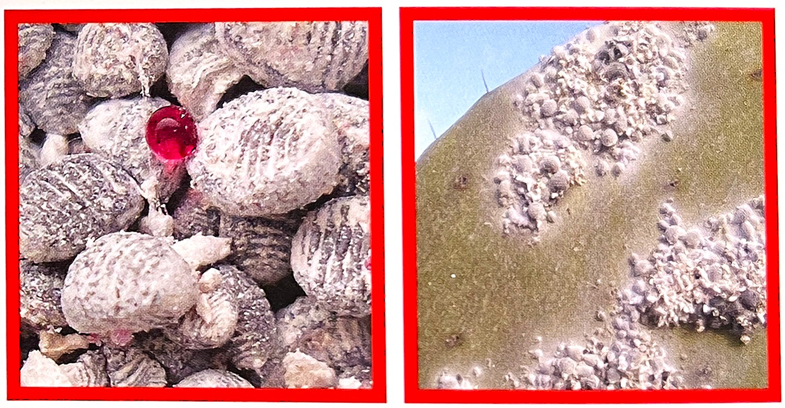왼쪽에는 이 벌레의 귀중한 색소 분비물과 함께 한 무리의 코치닐 벌레가 있다. 오른쪽에는 코치닐을 수확할 수 있는 선인장 대가 보이는데, 바로 여기에 벌레가 촘촘하게 박혀 있다.[1]
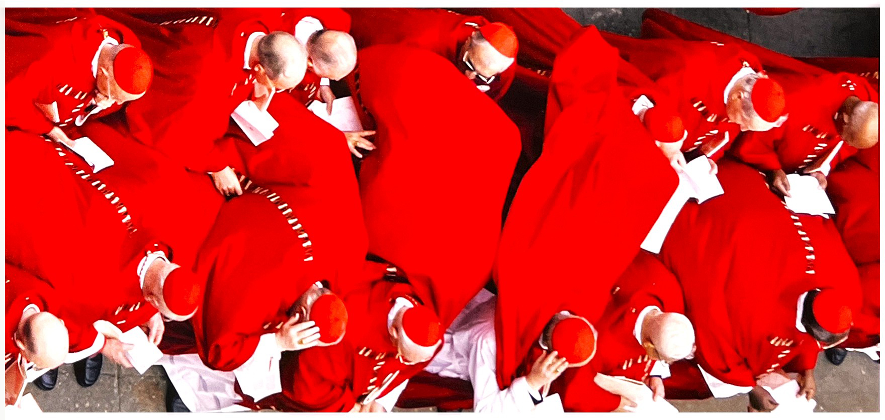빨강색 망토로 치장한 잉글랜드의 제임스 1세스코틀랜드의 제임스 6세, 1621년경
역사속애서 빨강의 의미[7]빨간색만큼 상징적 반향이 놀라운 색은 찾아보기 힘들다. 이는 인도-유럽 언어에서 '빨강'이 삶을 부여하는 피와 같은 탁월한 색으로 간주되었기 때문이다. 레드red, 러쥐rouge, 로트rot나 로소rosso라는 용어들 모두 산스크리트 단어인 rudhira로부터 파생되었는데, 이는 피를 의미한다. 잉카 언어인 아이마라에서 푸카puca보다 그라나grana에 더 가가운 동의어는 빌라vila인데 '피'라는 단어이다. 자연적인, 혹은 인공적인 주황색 베메욘bermellon으로부터 베메효bemejo는 중세에 '빨강'을 의미했던 단어로 지금까지 가장 많이 사용된 스페인어였다.
연지벌레에 해당하는 스페인어로 그라나grana를 사용하게 된 것은 이 벌레와 유사한 유럽과 아프리카의 곤충인 커미즈coccus illicus 와의 혼동에서 비롯되었다. 이 곤충 또한 중세와 르네상스 시대에 커미즈Kermes라는 가장 중요한 빨간색 염료를 만들어 냈다. 특히 스페인에서는 안달루시아 지방에서 채취되었다.그라나는 이탈리아어로서는 단순히 염료를 만들기 위해 처리되는 연지벌레 같은 곤충의 몸통에 대한 단어였다. 커미즈kermes는 영국에서는 '스칼렛scarlet(진홍색)'으로 알려진 값비싼 모직 옷감을 염색하는데 사용된 염료였다. 후기 중세 시대까지는, 특히 스페인에서 에스칼라타escarlata는 빨간색 그 자체를 의미하게 되었다.
진홍색은 엄청나게 고급스러운 것이었다. 13세기에 카스틸레Castile와 레온leon 왕국위 법률에서는 이 색을 왕만 사용할 수 있도록 제한하였다. 이 색갈은 로마 제국의 보라색으로 자연스럽게 계승되었으며 15세기 후반 스페인에서는 결국 퍼푸라purpura(자주색)라는 이름으로 동일한 의미를 가지게 되었다.
이러한 특권과 왕권과의 연합은 또한 푸커puca를 또한 특징 짓는다. 피사로Francisco Pizarro가 잉카 아타후알파atahualpa를 카자마르카cajamarca 근처의 그의 거주지에서 만났을 때 잉카의 머리장식에는 그의 특별한 왕족 장식 술인 'de lana muy fina de grana(양질의 진홍색 양모)가 달려 있었다. 두 번째 잉카 언어인 아이마라는 '붉은색pucaq thaaratha 옷을 입은 마을 주위를 행진하는 것'이라는 특별한 뜻을 지니고 있었으며 이 경우 염색된 옷감에 대한 푸카puca라는 퀘추아 단어를 사용하였다. 이것은 아타후알파와 함께 피사로의 관객에 대한 스페인어로 보고된 보고서였고 언어 사용에 모든 우리의 기록은 스페인어를 사용하는 사전 편찬자들에 의한 것이므로, 우리는 단순히 색채 용어가 16-17세기에 토착적 사용으로 흡수된 스페인 정복자들의 태도를 관찰한 것일 수도 있다. 그러나 스페인어 단어인 코로라도colorado(빨강)의 의미를 발전시키는 경우에서 보듯이, 적어도 생각의 소통은 일방적이지 않았다는 것을 암시하고 있다.

빨강과 여성성[7]
괴테의 [색의 이론]에 의해지지된 색에 대한 체계적 이해와 '궁극적 예술'로서 색은 함부르크의 화가 롱에의 [색구]와 그의 그림인 세개의 [시각](Times of day) 에서 표현되었다. 아침은 롱에의 체계에서 빻간색으로 그려졌다. [아침]의 작은 판본, 1808, 색에 성별을 부여하는데 있어서도 빨간색은 여성 인물인 오로라와 연결되어 있고 틀 안에서의 빨간색 백합옆에 놓았다.
우리가 접할 수 있는 색채 사용의 역사작인 예들은 대부분 필연적으로 이 같은 전통적인 사회의 가장 높은 계층으로부터 제공될 수 밖에 없었다. 밝은 색에 폭넓게 접근할 수 있었던 것도 부자로 좋은 가문에서 태어난 사람들만이 가지는 특권이었으며, 색이 사람들에게 광범위하게 영향을 미치는 것은 단지 공공 예식의 경우뿐이었다.
머그잔 속의 불은 벌레[1]2012년, 한 채식주의자의 웹 사이트에 거대 커피 회사인 스타벅스에 대한 기사가 실렸다. 기사에서는 스타벅스의 딸기 프라푸치노가 엄밀히 말해 채식이 아니라고 주장하면서 스타벅스에서 죽은 벌레를 으깨서 음료의 붉은빛을 낸다고 기술했다. 이에 언론은 난리가 났으며, 동물애호단체 등은 다른 음료를 사용해야 한다고 주장하기도 했다. 딸기 프라푸지노를 애용하던 일반 소비자들 역시 당황했다. 하지만 색 전문가들은 어안이 벙벙할 따름이었는데, 얼마나 많은 제품의 색이 바로 이 색소와 벌레, 즉 코치닐Cochineal로 만들어지는지 알고 있었기 때문이다.
코치닐은 고대 아즈텍 족에게 숭배의 대상이었는데, 멕시코에서는 포스트 식민주의 시대에 금 다음으로 가장 선호하는 수출품으로 간주되었다. 이 벌레는 부자들이 입은 천의 염료로 사용되어 권력자와 비권력자를 구분하는 척도가 되기도 했다. 아즈텍 족은 코치닐을 최초로 수확한 민족이다. 후에 스페인 사람들이 상륙하여 아즈텍의 직물에서 이 빨간색을 보고 감탄해 마지 않았다. 약 435그램의 적색 염료를 만드는데 7만 머리 이상의 벌레가 필요했지만 스페인 삶들은 이에 굴하지 않고 유럽으로 이 색소를 수출하기 시작했다.
코치닐 염료는 나후아틀에서는 노췌칠nochetzil로, 퀘추아에서는 란카푸카llankapuca 또는 단순히 푸카puca로, 아이마라에서는 그라나grama로 알려져 있다. 색을 띠는 연지벌레 염료는 가치가 있었다. 연지벌레의 암컷을 말린 몸통으로, 아즈텍에서는 세금을 위한 돈으로도 사용되었다. 우리는 옥사카와 커야라파의 도시들에서 목테주마Moctezuma에게 바쳐진 세금에 대한 기록을 갖고 있다.[7]
스페인 사람들은 200년 동안 이 색소를 독점하기 위해 갖은 노력을 다했다. 하지만 한 프랑스인이 코치닐 벌레가 촘촘히 박혀 있는 선인장 대를 몰래 훔쳐 아이티 섬으로 가져 가서는 의복을 제작하기 시작했다. 기술이 유출된 이 후로 여러 국가에서 이 염료가 판매되기 시작했다.
1870년대에는 알리자린alizadin이라는 새로운 합성염료가 생산되었다. 푼돈으로 변색되지 않는 아름다운 빡간색을 얻을 수 있게 되자 하룻밤 사이에 코치닐의 재고가 쓸모없는 물건으로 전락해 버렸다,
오늘날에는 유독성 적색 염료로 가득 차 있으며, 일부는 암을 유발하는 것으로 증명되기도 했다. 보다 자연적인 것을 찾으려는 추세와 함께 많은 사람들이 코치닐을 다시 찾기 시작했으며, 이제는 그 화학명이 E120으로 널리 알려져 있다.
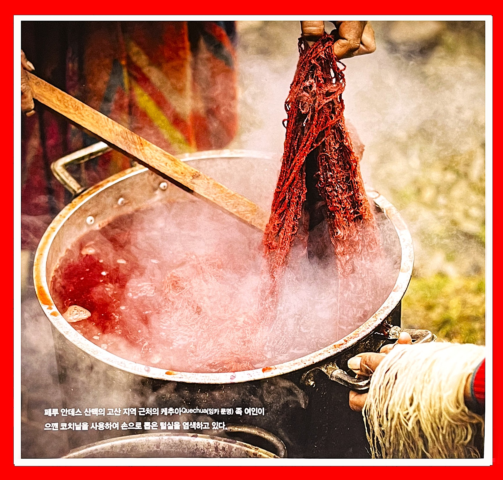 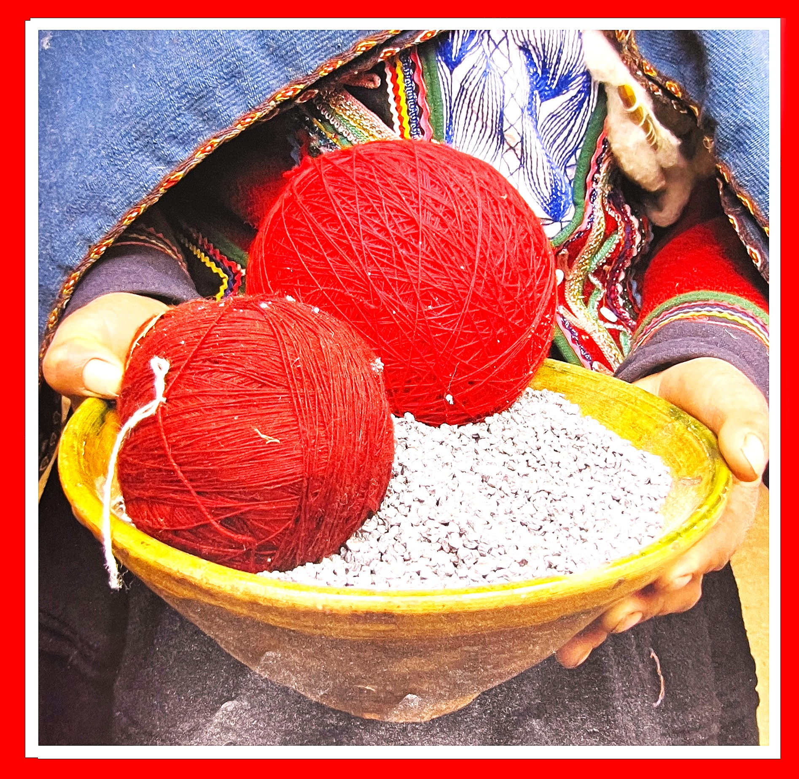페루 안데스 산맥의 고산지역 근처의 캐추아Quechua (잉카문명)족 여인이 으깬 코치닐을 사용하여 손으로 뽑은 털실을 염색하고 있다.[1]
색채 척도에서 빨강[7]로저 베이컨과 같은 색채 이론가들은 빨간색을 중간색으로 간주하였지만 1000년경에 편찬된 '수이다스suidas' 비잔틴 백과사전에서는 빨강을 분명하게 빛의 등급 끝에 두었으며 색조의 순서에서는 노랑 바로 다음에 두어 흰색, 노랑, 빨강, 갈색, 파랑, 검정의 순서로 정리했다. 이는 전적으로 흰색 또는 금색 대용으로 간주되는 빨강에 대한 아주 고대적인 관점이며, 가장 귀하게 여겨지는 금색은 붉은색을 띠고 있었다. 빨강과 금색의 친밀한 사용은 금색을 밑바탕에 사용한 모자이크, 판넬화와 세밀화에 빨강을 함께 칠했던 것, 그리고 심지어 빨강색의 주변에 금색 실을 붙이는 과정에 의해서 중세 미술에서도 지속되었다. 호시오스 루카스 수도원의 '십자가에 매달린 예수the crucifixion' 의 두 장면도 도상학적으로 보인다. 교회에 있는 모자이크 속의 후광은 금색이며, 교회 지하실에 그려진 예수를 십자가에서 내리는 장면의 후광은 붉은색이다.
적색테이프로 봉인[1]중세 귀족의 의복에서부터 그들이 사용하던 편지지나 문서에까지 중세시대 전반에 걸쳐 왕과 교황, 기타 고관대작들은 값비싼 빨간색 밀랍으로 제작된 우아한 적색 봉인을 사용하여 서신의 비밀을 보장할 수 있었다. 이것은 편지를 전달하는 전령이나 호기심 어린 다른 사람들이 그 안에 들어 있는 내용을 볼 수 없도록 하기 위한 것이었다.
하지만 이러한 적색 봉인이 처음 언급된 때는 16세기의 헨리 8세 시절이었는데, 그는 로마 교황 클레멘스 7세에게 아라곤의캐서린과의 혼인을 무효로 해줄 것을 재차 요청한 바 있다. 이들이 영국울 여행하는 동안 교황은 필요한 서류를 적색 테이프로 봉인하여 다른 사람들이 건드리지 못하도록 했다.
오늘날 관공서의 불필요한 요식을 의미하는 '레드 테이프'라는 용어는 소설가 찰스 디킨스로부터 유래되었다. 그는 다음과 같이 묘사했다.
"런던 경찰국에는 다량의 적색 테이프가 있다. 그 곳에서 일을 보려면 그만한 대가를 치러야 할 것이다." 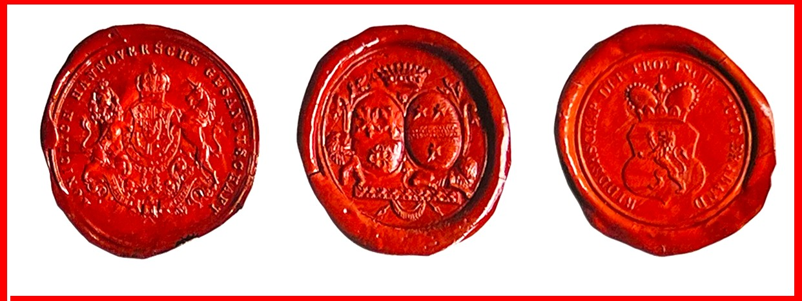 유혹의 법칙[1]서로 다른 색은 각각 다릉 동물을 유혹한다. 가령 선홍색 꽃은 오직 빨간색만 식별할 수 있는 새들에 의해 수분하고, 자외선 꽃들은 전자기 스펙트럼 저 멀리까지 볼 수 있는 꿀벌들만 유혹한다. 분홍과 연보라색은 나비들이 가장 선호하는 색이다. 향이 강한 옅은 색 또는 흰색 꽃은 박쥐나 나방의 사랑을 받는데, 이들의 경우 시력은 형편없지만 후각이 뛰어나기 때문이다. 영장류를 비롯하여 다른 포유동물들을 유인할 때도 박쥐와 유사한 방법을 써서 수분한다.
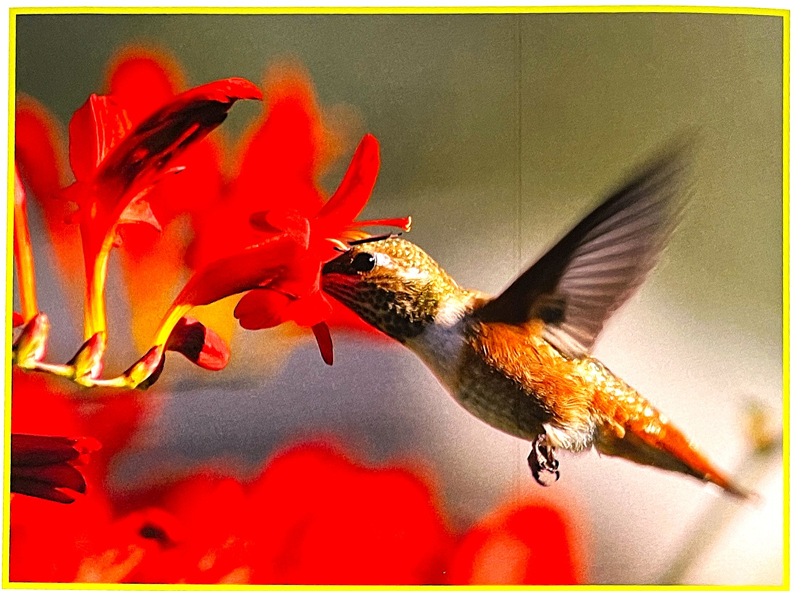이 벌새는 빨간색 꽃 깊숙이 부리를 잡아 넣어 꽃의 꿀을 추출한다.
빨간색의 힘[3]회화나 디자인에 활용되는 색채학에서 빨강은 여러 특징을 나타낸다. 힘, 기쁨, 다이내믹 등을 의미하는 동시에 따듯함, 호의, 매력 등의 이미지도 가진다. 여성적이기보다는 남성스러움에 가까우며 나이가 든 노인 보다는 청년세대와 가까운 색이 빨강이다. 지리상으로는 북쪽 국가보다는 남쪽 나라 생활공간에 어울린다.
빨강은 사람이 원하든 그렇지 않든 역동적으로 상대를 움직이는 힘을 가졌다. 그래서 교통 신호판뿐만아니라 각종 광고에서 큰 역할을 한다.
빨간색은 군중심리를 자극하기에 대단히 효과적인 색상이다. 투쟁, 활동, 다이내믹 등 단어가 연상되는 투우, 축구선수들의 유니폼에 붉은색을 애용하는 이유다. 2002년 대한민국 국민들을 열광케 만들었던 붉은 악마 티셔츠를 떠 올려보자. 빨간색은 이렇게 관중들을 흥분하게 만들거나 열정ㅇ르 불어넣는 효과적인 수단이다.
중국인에게 붉은색은 신성함을 의미하기도 한다. 중국의 경극에서 등장인물 가운데 빨간 화장을 한 모습도 이런 락에서 해석된다. 빨간색으로얼굴을 꾸민 배우는 보통 신성한 인물을 상징한다. 근대에 들어 문화 혁명을 일으킨 마오쩌둥의붉은 광장 또한 이러한 빨강의 의미가 반영돼 있다.
냉전시대에 워싱턴과 모스크바 사이에는 우리 모두의 삶과 운명을 결정할 수 있는 이른바 '핫 라인이 설치됐다. 그때 각 도시에 놓인 것은 '빨간 전화기'였다.
빨강은 또한 정력, 에너지, 확신 그리고 능력을 암시한다. 식욕 혹은 성욕을 당기는 힘도 있다. 그래서 달콤한 사탕 혹은 매운 음식이나 향신료 제품을 포장한 데 효과적으로 이용된다.
빨간색의 심리학[2]어떤 문화에서는 여자가 선홍색 드레스를 입으면 자신의 성적 매력을 어필하려는 의도로 보기도 한다. 빨간색 옷을 입은 여자는 기분 좋은 성적 자극에서 성적인 죄에 이르기까지 다양한 의미를 함축한다. 나다니엘 호손Nathaniel Hawthorne의 1850년 작품 [주홍 글씨]에서 여주인공 헤스터 프린은 간음에 대한 처벌로 자신의 옷에 주홍 글씨 'A'를 새겨야 했다.[1]
빨간색 성향의 사람들은 격렬한 삶의 정신, 삶에 대한 의지가 충만한 사람들이다. 이들은 자극, 결의, 열정, 투지의 성향이 강하다. 지칠 줄 모르는 에너지를 소유한 이들은 용기, 자유, 끈기, 열정을 몸소 실천한다. 이들은 성공하고자 하는 불타는 욕망을 지녔으나 생각 없이 행동으로 옮기는 경향이 있다. 무슨 일이 있어도 자기하고 싶은 대로 하는 사람들이다.[2]
활기 있고 자극적인 성향을 지녔으나 실질적인 성격이기도 하다. 이들은 한번 결정을 내리면 그 결정을 계속 밀고 나간다. 망설이는 것을 용남하지 않는다. 빨강의 성향을 가진 사람들 중에는 훌륭한 지도자, 개혁가, 투사들이 많으며 이루어 놓은 것이 아무 것도 없는 상황 속에서도 대단한 것을 창출해 내는 사람들도 빨간색의 성향을 지녔다. 생명력이 넘치며, 스스로의 결정에 따라 움직이는 탐험가나 개척자들도 이들 중에 속한다. 군 지휘자나 CEO들도 빨간색과 관련이 있는데, 이들은 특히 신체적인 힘뿐만 아니라 감정적인 면도 함께 지니고 있다.[2]
한 연구 결과에 따르면, "어떤 남자가 가장 섹시해 보입니까?"라는 질문에 여성들은 대체로 빨간색 옷을 입은 남자를 선택한다.[1]
빨간색 혼합색[2] 분홍색(Pink) :분홍은 수많은 그림에서 수줍음, 달콤함, 로망스 등으로 표현하며 부드러운 느낌이다. 분홍색을 떠올리면 건강미는 약하지만, 어머니의 따듯한 사랑처럼 진실된 희생과 사랑을 전제로 하는 색으로 표현할 수 있다. 이 색이 직접적으로 연상되는 미미지는 다음과 같다. 부드러움, 수줍음, 달콤함, 향기로음, 조용함, 순함, 속옷, 봄에 피는 꽃, 발레, 화장품 등이 여기에 속한다.[3]
스칼렛(scarlet) :빨간색에 오렌지색이 섞인 스칼렛 색은 순수 빨간색보다 더 강력할 수 있는 독특하면서도 지배적인 색상이다. 스칼렛 성향의 사람들은 엇갈리거나 대립되지 않는 한 즐겁고 수완이 뛰어난 사람이다. 이들은 에너지가 많고 추진력이 있으며, 세속적인 사람이어서 어떤 일을 완수하거나 선거 유세를 해야 하는 경우에 유리하다. 이 색상은 자기의 일에 자신감을 부여하는 색상이다. 뜻하지 않게 인생에 대한 사랑과 열정이 생길 수 도 있다.
크림슨(crimson) :빨간색과 파란색 기미가 살짝 감도는 크림슨 색상은 최면 치유력을 가지고 있어서 사람들에게 적당한 평안함과 활력을 준다. 살면서 많은 사람들과 관계를 맺는 과정에서 이 색상은 파란색 기운 때문에 순수한 빨강보다 정서적으로 훨씬 더 부드럽게 작용한다. 크림슨 색상은 호기심을 유발하고 신비로움을 발산시킴으로써 여성의 아름다움을 부각시킨다. 크림슨 타입의 사람들은 흥분할 경우 호소력과 설득력을 발휘한다.
불꽃색(flame) :불꽃색은 밝은 빨간색과 오렌지색이 불같이 혼합되어 있는 색상이다. 이 색상은 무엇이든 태워버리는 능력이 이어 불태우고 제거한다.
마젠타색(magenta) :마젠타 색은 빨간색과 보라색이 혼합된 색상이어서, 적외선과 자외선의 보이지 않는 에너지를 효과적으로 이용한다. 이 색의 성향을 가진 사람들은 ‘세상사가 다 생긴 대로 돌아간다’라는 말을 인정한다. 이들은 자신이 원하는 것을 좀 더 부드러운 방법으로 회득하고, 사랑을 통해 성취하려고 한다. 이들은 시간 관리를 잘하는 사람들이다.
카톨릭교회 역시 빨간색을 사용했다.[1] 13세기 보니파티우스 8세는 추기경들이 빨간색 카속을 입고 그리스도를 위해 목숨을 바친 순교자들처럼 자신의 생명과 피를 희생함으로써 교회에 헌신하겠다는 의지를 표명하도록 했다.
빨간색으로 표현된 패션[4]빨강 계열의 색이라 하더라도 채도에 따라 다양한 이미지의 패션 스타일을 연출할 수 있다. 명도가 높아지고 톤이 약해진 빨강은 강한 느낌이 줄어들고 좀 더 경쾌하며 부드럽고 여성스런 이미지를 보인다. 명도가 낮아지고 짙어진 버건디burgundy와 같은 색은 우아함, 품위, 부유함을 나타낸다. 그리하여 좀 더 성숙하고 고급스런 이미지를 연출할 수 있다.
빨간색 인테리어[4]빨강은 풍수지리의 영향으로 대문의 바깥면을 빨강으로 하여 악귀를 물리치고 행복을 받아 들이는 의미로 사용된다. 에너지를 증가시키는 강렬한 이미지로 본능적이고 열정의 느낌을 전달하기도 한다. 방 전체에 사용하기는 지나치게 강렬하여 쉽게 사용할 수 없는 색이지만 중심적인 색상이나 검정과 흰색의 배색 등 단조로울 수 있는 색들이나 공간에 액센트를 줄 수 있는 부분적인 사용으로 세련되고 활력있는 공간을 연출할 수 있다. 또한 유아의 뇌 신경계의 발달에 자극을 주므로 탁아시설이나 유아를 위한 공간에 사용하면 좋다.
[참고문헌]:
[1] 컬러, 그 비밀스러운 언어 COLOR, 조앤 액스터트, 아리엘 엑스터트, 신기라 옮김,시그마 북스, 2014.9.10.
[2] 몸과 마음을 치료하는 색채, 릴리안 베르너 본즈, 번역 한창환, 도서출판 국제, 2008.1,10.
[3] 색의 힘, 하랄드 브램, 번역 이재만, 일진사, 2010.5.20.
[4] 색채 기획을 위한 색이야기, 김문여 김봉섭 안희정, 교학연구사, 2011. 6.30.
[5] 좋아 보이는 것들의 비밀 편집&그리드, 이민기 지음, 길벗, 2015.5.1.
[6] 색채 디자인 교과서, 문은배 지음, 길벗, 2010.12.28
[7] 색채의 역사-미술, 과학 그리고 상징, 존 게이지 지음, 박수진 한재현 옮김, (주)사회 평론, 2011. 5.11
....
....
....